Eventos pasados
Registro de actividades académicas, culturales y de vinculación realizadas por UNAM-Deutschland..
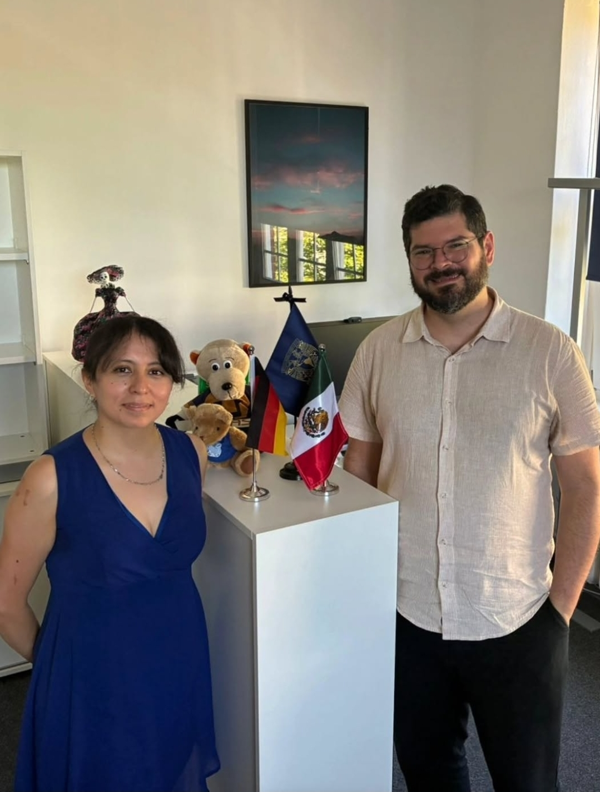
Akademische Zusammenarbeit UNAM – Freie Universität Berlin
Christian Lazar von der Freien Universität Berlin besuchte den Sitz UNAM-Deutschland im International House und wurde dort von Dr. Yolanda Irasema Chirino López und Lucero Oropeza empfangen. Im Mittelpunkt des Gesprächs standen Kooperationsmöglichkeiten, akademische Mobilität, Forschung und Wissensaustausch.
Konzert: Fanny Hensel-Mendelssohn und Guadalupe Olmedo
Die Mexikanische Botschaft und der Sitz UNAM-Deutschland veranstalteten gemeinsam ein Konzert, um auf das Wirken der deutschen Komponistin Fanny Hensel-Mendelssohn und der mexikanischen Künstlerin Guadalupe Olmedo aufmerksam zu machen – ermöglicht durch die Forschungsarbeit von Dr. Monique Rasetti.
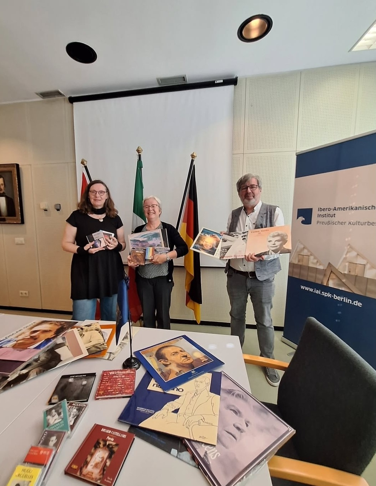
Schenkung der Sammlung „Voz Viva“ an das Ibero-Amerikanische Institut Berlin
Die Sammlung „Voz Viva“ – rund 400 Stunden Tonaufnahmen, unter anderem von Octavio Paz, Juan Rulfo und Gabriel García Márquez – wurde dem Ibero-Amerikanischen Institut Berlin im Rahmen einer Zeremonie unter der Leitung von Dr. Yolanda Irasema Chirino López und Dr. Bárbara Göbel übergeben.
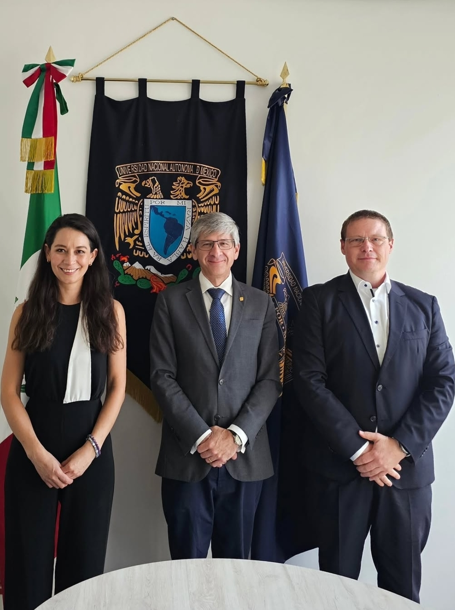
Besuch von Dr. Christian Sturm – Technische Hochschule Ingolstadt (THI)
Dr. Christian Sturm von der Technischen Hochschule Ingolstadt wurde empfangen, um die studentische Mobilität in den Bereichen Cybersicherheit und Künstliche Intelligenz zu stärken. Im Rahmen des Besuchs standen ein Rundgang über den Campus sowie ein Treffen mit Dr. William Lee von der Coordinación de Relaciones Internacionales der UNAM auf dem Programm.
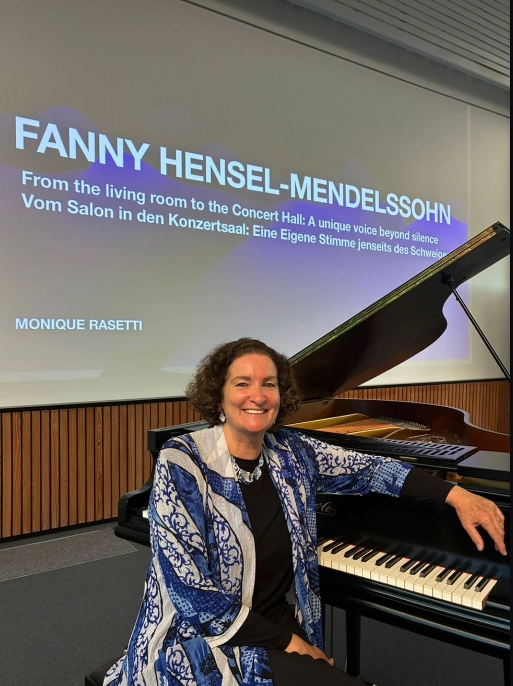
Musical Exhibition: Fanny Hensel-Mendelssohn
Monique Rasetti von der Facultad de Música der UNAM gab, mit audiovisueller Begleitung, ein Klavierkonzert zu Ehren von Fanny Hensel-Mendelssohn (1805–1847). Die Veranstaltung fand im ZiF der Universität Bielefeld statt.
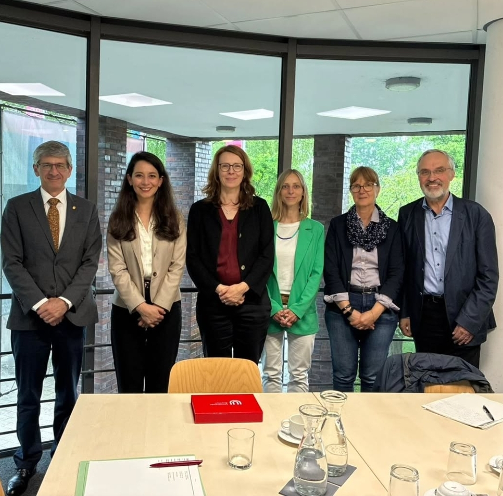
Besuch der Universität Bremen
Bei mehreren Treffen mit Forschungsinstituten ging es um Hybridwerkstoffe, Mikrosensorik, Festkörperphysik, Umweltphysik, Fernerkundung sowie die Geschichte Nordmexikos. Teilgenommen haben die Professorinnen und Professoren Colombi Ciacchi, Lüssem, Eickhoff, Ladstätter-Weißenmeyer, Warneke und González de Reufels.
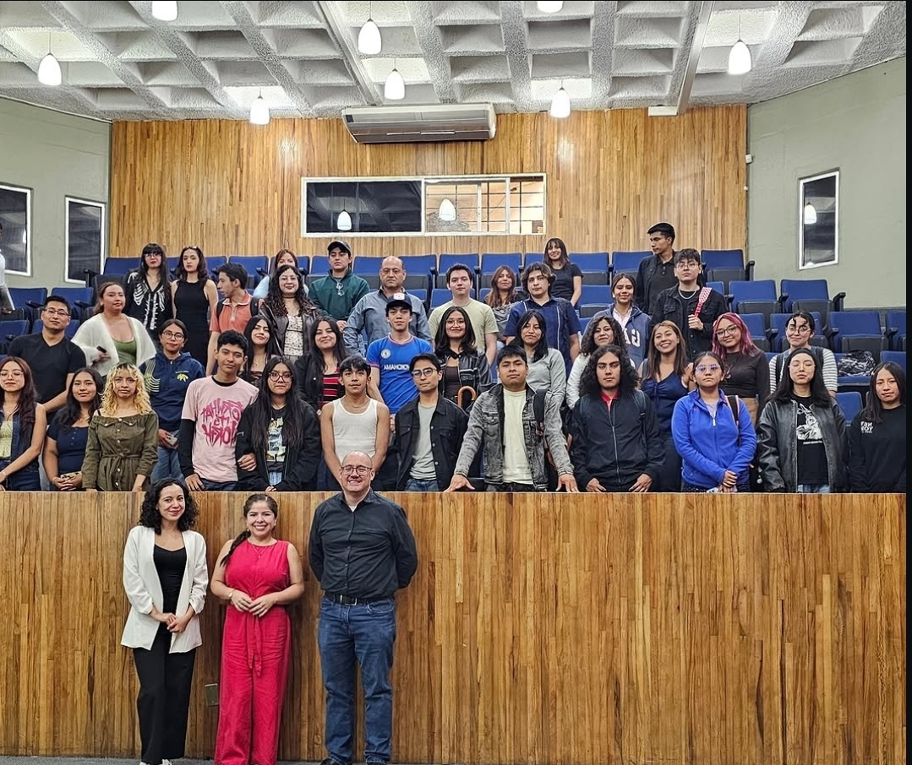
Informationsveranstaltung zur Europa-Universität Viadrina – FES Acatlán
Studierende der FES Acatlán erhielten Informationen zu akademischen Möglichkeiten und Mobilitätsprogrammen an der Europa-Universität Viadrina in Frankfurt (Oder). Es referierten Dr. Claudia Casiano (Viadrina) und Dr. José Antonio González, RURI der FES Acatlán, sowie Biol. Evelyn Garfias als Vertreterin des Sitzes UNAM-Deutschland.
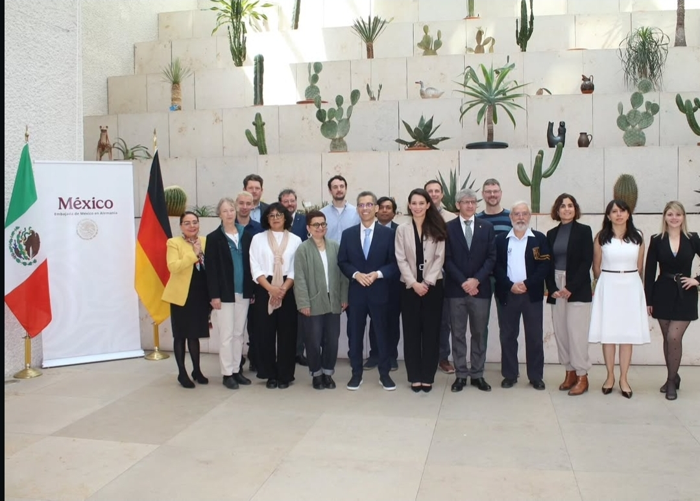
Workshop: Auswirkungen von Mikroplastik auf die menschliche Gesundheit
Im Rahmen des Ständigen Seminars von UNAM Europa in Deutschland fand in Berlin der Workshop „Human health impacts of microplastic exposure and challenges in their detection“ statt, der Fachleute, Diplomatinnen und Diplomaten sowie Wissenschaftlerinnen und Wissenschaftler aus zahlreichen internationalen Institutionen zusammenbrachte.
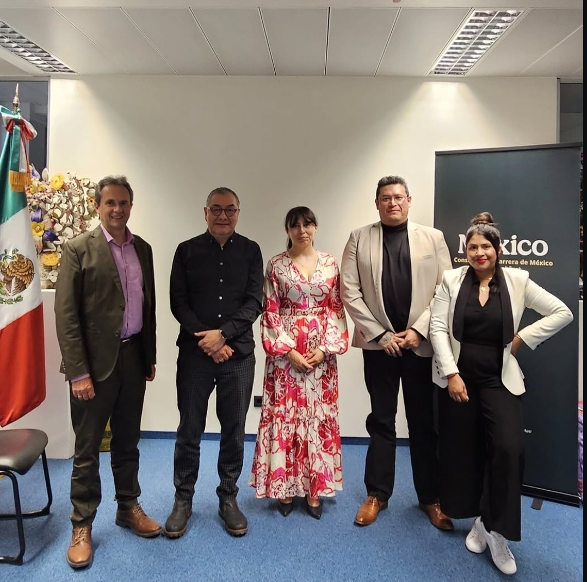
Zeitgenössische Perspektiven des mexikanischen Kinos – Frankfurt
Studierende der ENAC-UNAM zeigten in einer Sondervorführung ihre Kurzfilme und gaben damit Einblick in die Vielfalt des zeitgenössischen mexikanischen Kinos. Die Veranstaltung wurde von der ENAC-UNAM und dem Mexikanischen Konsulat in Frankfurt unterstützt.
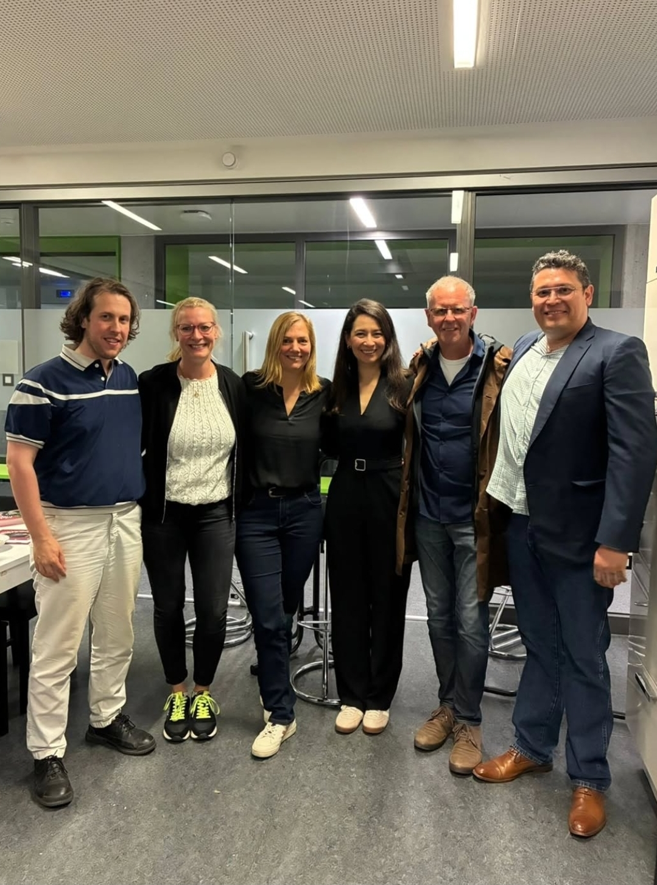
ENAC Film Showcase 2026 – Universität Bielefeld
Studierende der ENAC-UNAM präsentierten an der Universität Bielefeld Kurz- und Spielfilme – eine Begegnung von Film, Dialog und kulturellem Austausch zwischen Mexiko und Deutschland.
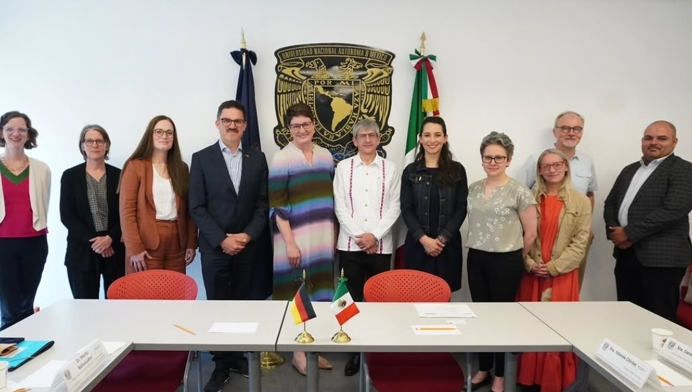
Treffen zwischen der UNAM und dem Bundesministerium für Forschung, Technologie und Raumfahrt (BMFTR)
Vertreterinnen und Vertreter der UNAM und des BMFTR trafen sich, um die wissenschaftlich-akademische Zusammenarbeit auszubauen, neue Forschungsmöglichkeiten zu identifizieren und gemeinsame technologische Projekte zu entwickeln.
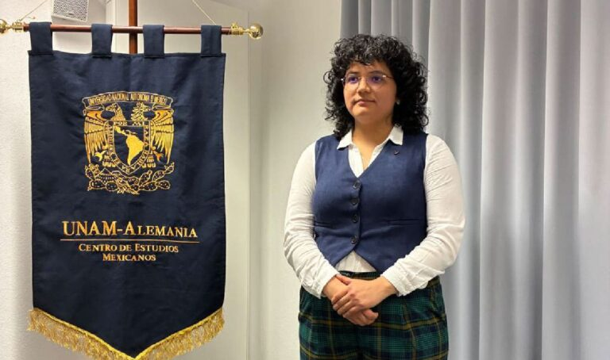
Internationale Titelverleihung ohne Grenzen – Miriam Andrea Matías Martínez
Die Absolventin Miriam Andrea Matías Martínez legte ihre Abschlussprüfung in Moderner Sprache und Literatur vom Sitz UNAM-Deutschland in Berlin ab, in Abstimmung mit der Facultad de Filosofía y Letras.
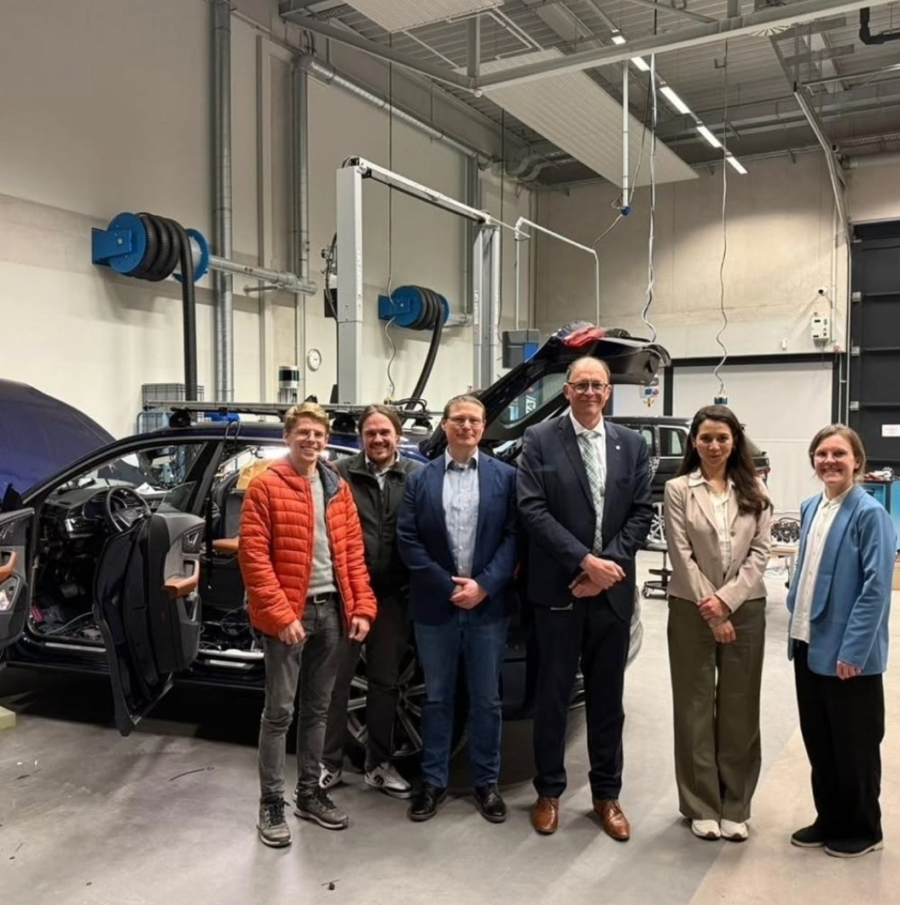
Zusammenarbeit zwischen UNAM-Deutschland und der Technischen Hochschule Ingolstadt (THI)
Die Leiterin des Sitzes UNAM-Deutschland besuchte die Technische Hochschule Ingolstadt, unter anderem das Forschungszentrum für Fahrzeugsicherheit CARISSMA. Dabei wurden mögliche gemeinsame Projekte sowie Mobilitätsmöglichkeiten im Bereich Technologie und Innovation identifiziert.
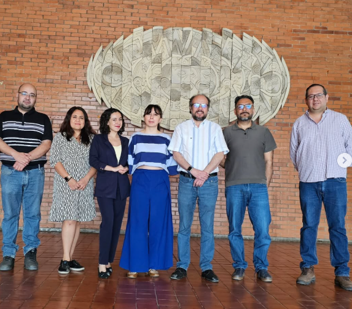
Besuch am Instituto de Energías Renovables der UNAM
La UNAM-Deutschland. impartió una charla sobre movilidad académica hacia Alemania en el Instituto de Energías Renovables de la UNAM.
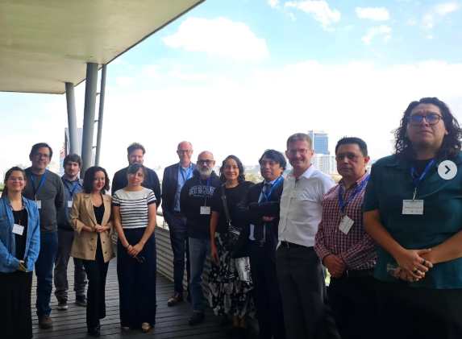
Workshop: Plasma Emission upon Laser Irradiation for Carbon Narrowing in Steel Production
Der Sitz UNAM-Deutschland nahm, in Zusammenarbeit mit dem Instituto de Ingeniería der UNAM, an einem deutsch-mexikanischen Workshop zu Innovationen in Wissenschaft und Technik im Bereich der Stahlproduktion teil.
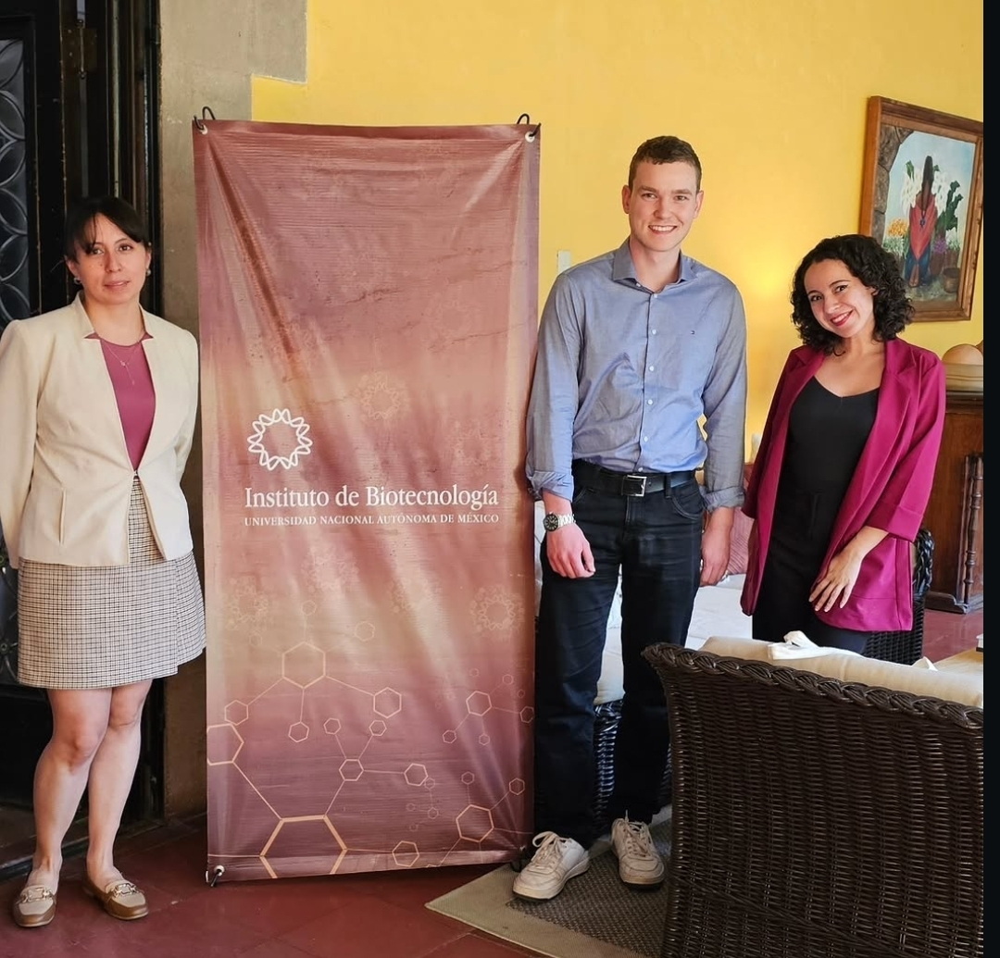
UNAM-Deutschland beim Workshop „Building Bridges in Vaccine Chemistry“
Diese Veranstaltung ging aus dem Mexican Science Day hervor, der im November in der Mexikanischen Botschaft in Deutschland stattfand – einer Initiative zur Stärkung der wissenschaftlichen Zusammenarbeit zwischen beiden Ländern. Fachleute, Studierende und Forschende diskutierten in Vorträgen und weiteren Formaten Themen wie Impfstoffchemie, virale Vektoren, Proteinnanopartikel, Strukturvirologie und hochauflösende Mikroskopie.
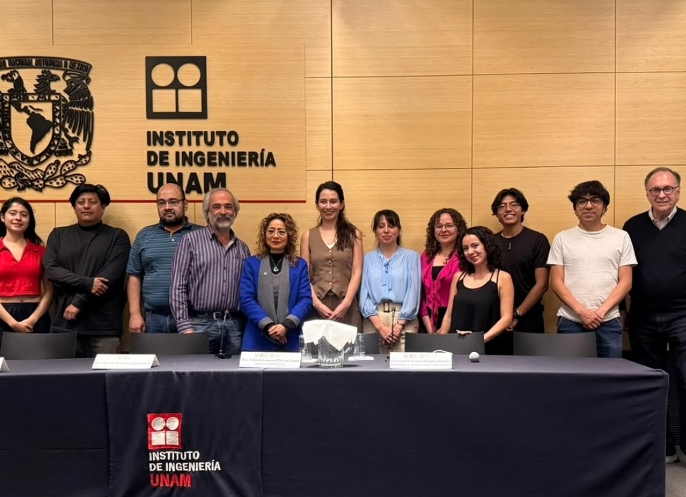
Vom Instituto de Ingeniería nach Deutschland: Forschungsaufenthalte, Promotion und Masterstudium
Das Instituto de Ingeniería der UNAM war Gastgeber eines Vortrags über akademische Möglichkeiten in Deutschland. Vorgestellt wurden unter anderem Forschungsaufenthalte, Promotions- und Masterprogramme sowie internationale Kooperationsprogramme..
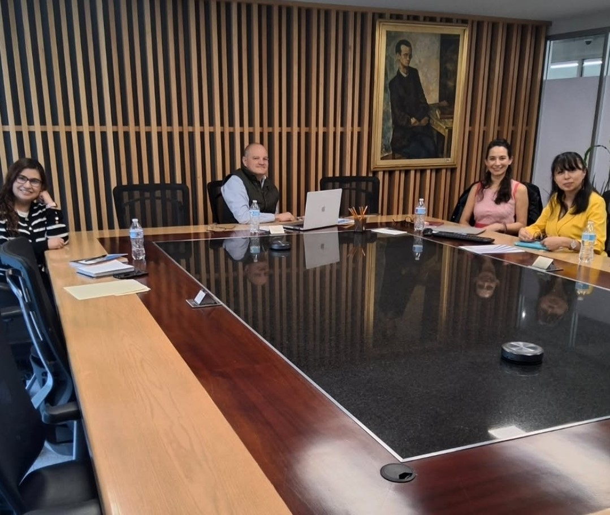
Der Sitz UNAM-Deutschland und das Institut für Mathematik knüpfen neue akademische Verbindungen
Das Instituto de Investigaciones en Matemáticas Aplicadas y en Sistemas (IIMAS) war Treffpunkt für Dr. Yolanda Chirino, Leiterin des Sitzes UNAM-Deutschland, und Dr. Ramsés Humberto Mena Chávez, Direktor des IIMAS. Im Gespräch ging es um neue Kooperationsmöglichkeiten, insbesondere um die Verbreitung von Forschungsstipendien in Deutschland.
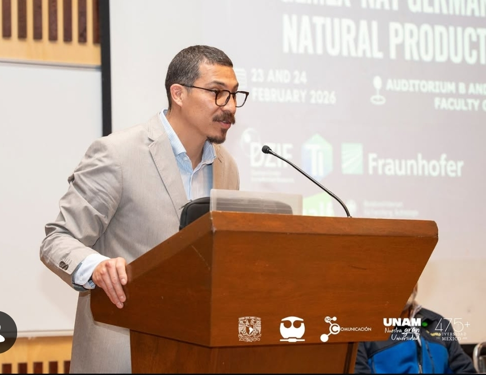
Erstes Symposium & Workshop GEMEX-NAT – Deutsch-Mexikanische Allianz für Naturstoffe
Organisiert von der Facultad de Química und dem Sitz UNAM-Deutschland, zielte die Veranstaltung darauf ab, die wissenschaftlichen Beziehungen zwischen beiden Ländern zu vertiefen, die chemische Vielfalt von Naturstoffen zu erkunden und aktuelle Strategien der Wirkstoffentwicklung sowie des Technologietransfers im Hinblick auf globale Gesundheitsherausforderungen zu analysieren.
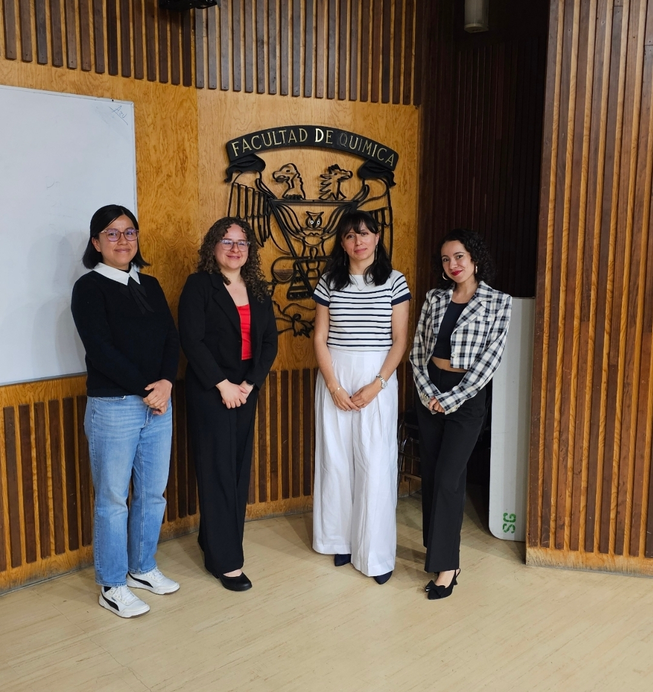
Der Sitz UNAM-Deutschland lädt Chemiestudierende zur Teilnahme an Austauschprogrammen ein
Mehr als eine Informationsveranstaltung – ein Anstoß, den Schritt ins Ausland zu wagen: Am Donnerstag, den 5. April, war die Facultad de Química Gastgeberin von Informationsveranstaltungen für alle, die internationale akademische Erfahrungen sammeln möchten.
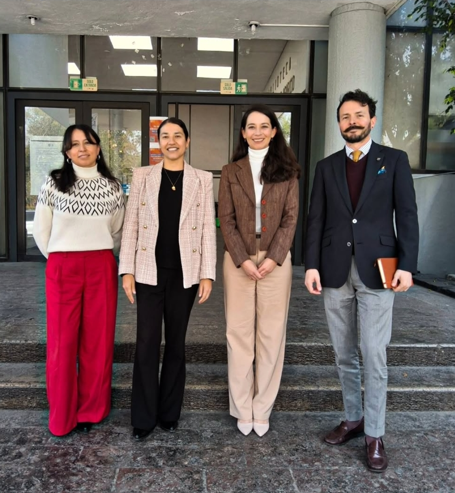
Begegnung zwischen der Facultad de Economía und dem Sitz UNAM-Deutschland
Die Facultad de Economía war Gastgeberin eines Arbeitstreffens mit dem Sitz UNAM-Deutschland, um die internationale akademische Zusammenarbeit voranzutreiben und neue Kooperationsmöglichkeiten zu eröffnen.
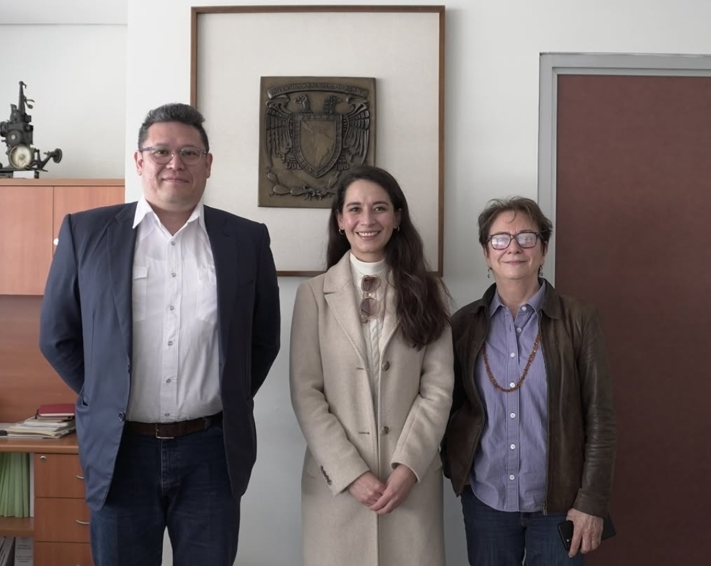
Besuch der ENES Juriquilla beim Sitz UNAM-Deutschland
Dr. Yolanda Chirino, Leiterin von UNAM-Deutschland, besuchte die ENES Juriquilla, um die akademische und kulturelle Zusammenarbeit zu stärken. Den Auftakt bildet die Präsentation der Filmreihe ENAC an der Universität Bielefeld im Mai 2026.
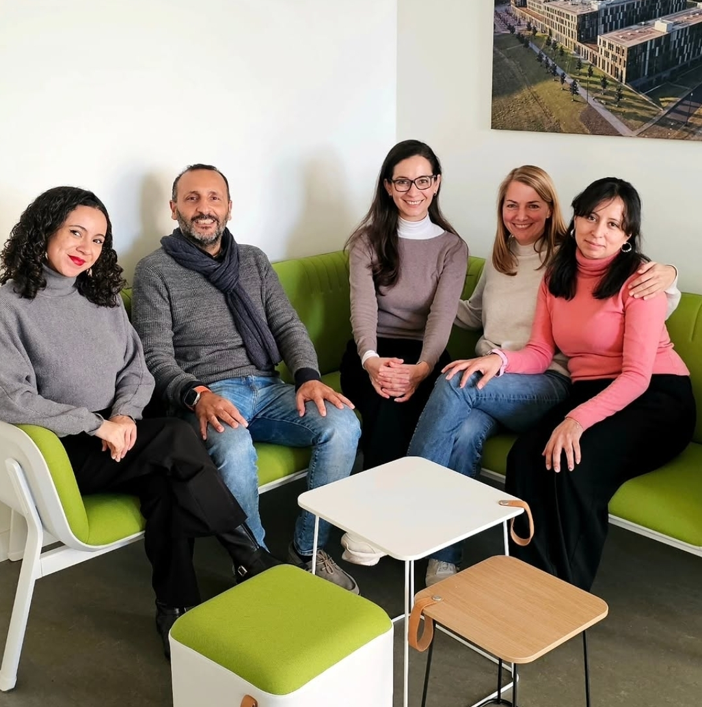
UNAM-Deutschland und HSBI Bielefeld: neue Perspektiven für die studentische Mobilität
UNAM-Deutschland besuchte die Hochschule Bielefeld (HSBI) und traf dort den Dekan des Fachbereichs Wirtschaft, Dr. Riza Öztürk, sowie Dr. Eika Auschner. Im Fachbereich Ingenieurwissenschaften und Mathematik stand zudem ein Rundgang durch das Da-Vinci-Projekt auf dem Programm, bei dem internationale Studierende Erfindungen Leonardo da Vincis nachbauen.
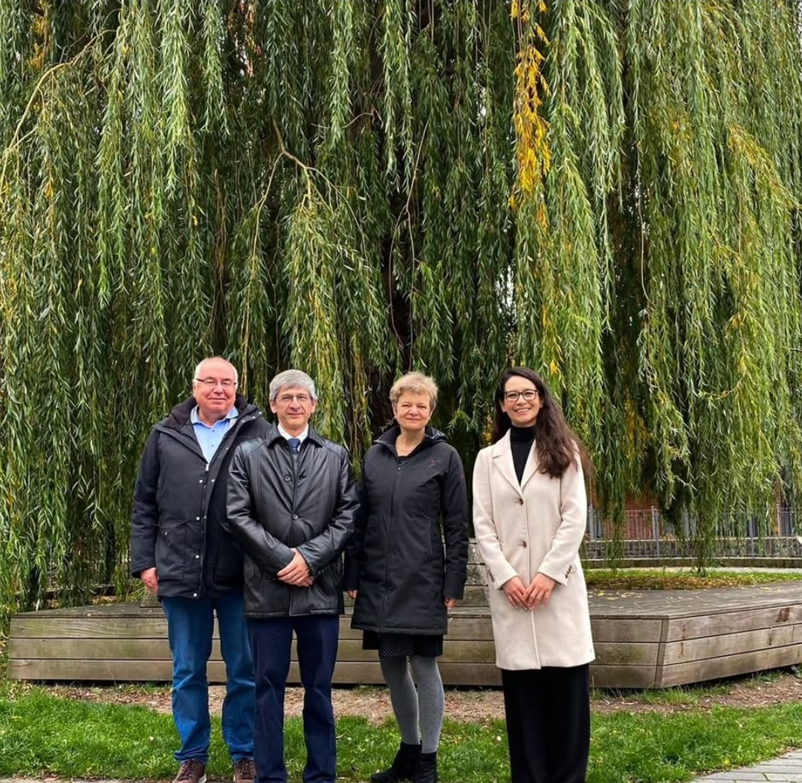
Vertreterinnen und Vertreter der UNAM trafen sich mit der Universität Kassel
Bei diesem Treffen bekräftigten Dr. William Lee, Koordinator für Internationale Beziehungen und Angelegenheiten (CRAI), und Dr. Yolanda Chirino, Leiterin von UNAM-Deutschland, gemeinsam mit Prof. Dr. Ute Clement, Präsidentin der Universität Kassel, und Dr. Randolf Oberschmidt, Leiter der Abteilung für Internationalisierung und internationale Kooperation, ihr Engagement für die Zusammenarbeit und sondierten neue Möglichkeiten für gemeinsame Projekte in den Bereichen Nachhaltigkeit, Lehre, Seminare zu globalen Themen sowie Kunst und Kultur.
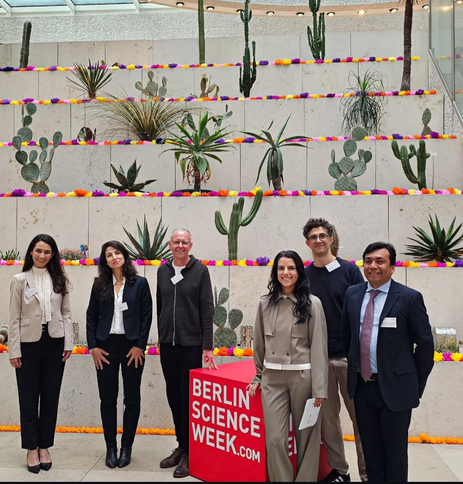
Mexican Science Day – Berlin Science Week 2025
UNAM-Deutschland nahm am Mexican Science Day teil: „Science connects: Mexico & Germany – Beyond Now“ in Berlin, mit Vorträgen, Podiumsdiskussionen und einem Science Slam, bei dem junge Wissenschaftlerinnen und Wissenschaftler über Innovation, Künstliche Intelligenz und globale Zusammenarbeit sprachen.
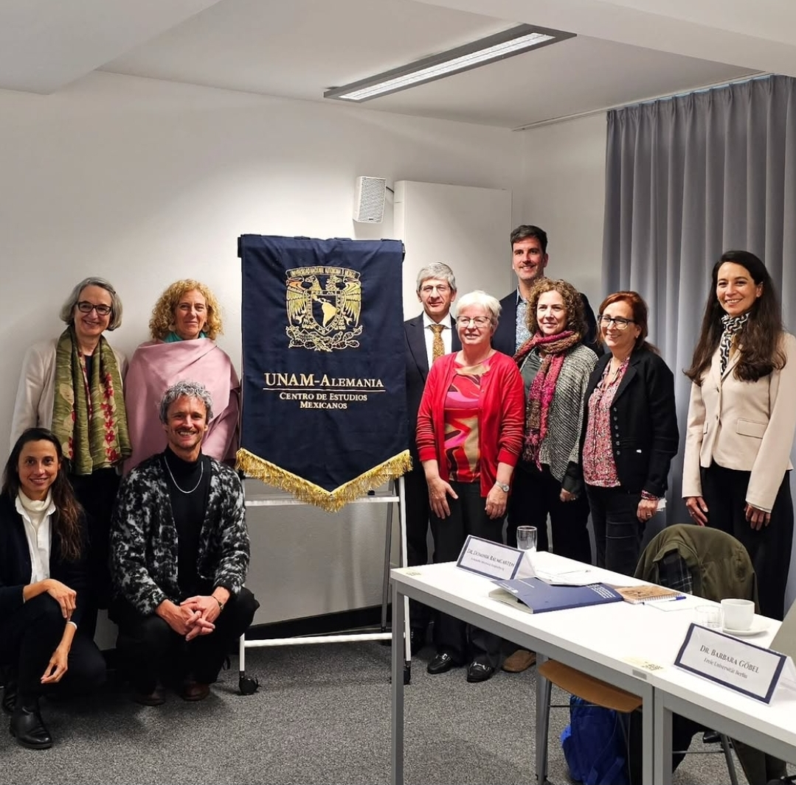
Konferenz zur Internationalisierung in den Geistes- und Sozialwissenschaften
Forschende aus Mexiko und Deutschland (FUB, TUB, LAI, IAI, CEPHIS und UDIR) tauschten sich über akademische Zusammenarbeit und Internationalisierung in den Geistes- und Sozialwissenschaften aus. Themen waren unter anderem Reiseliteratur, Urbanisierung in Lateinamerika, Populärdrucke, Digital Humanities und normative Konflikte.
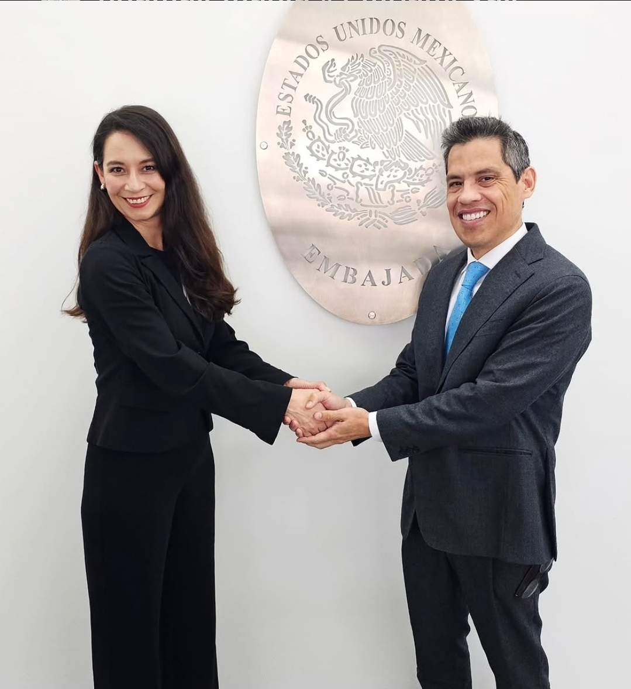
UNAM-Deutschland und die Mexikanische Botschaft in Deutschland vertiefen ihre Beziehungen
Die Leiterin von UNAM-Deutschland, Yolanda Chirino, und der mexikanische Botschafter in Deutschland, Francisco Quiroga, sprachen im Botschaftsgebäude über die Zusammenarbeit in Bildung, Kultur und Kunst. Das von Francisco Serrano und Teodoro González de León entworfene Gebäude ist von Chichén Itzá inspiriert.
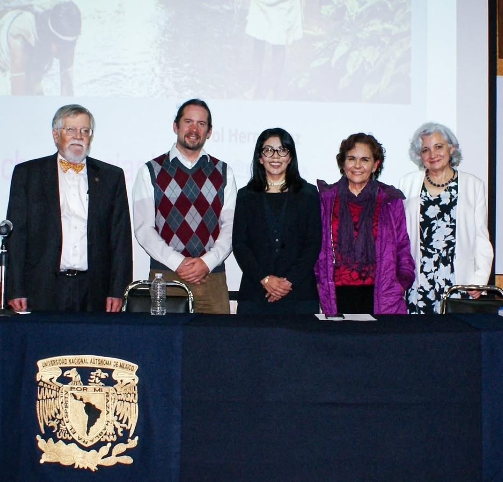
Kolloquium: The Ethical Dimension of Chemistry and Life Sciences
Die Facultad de Química war Gastgeberin dieses Kolloquiums zu den ethischen Herausforderungen der Chemie- und Lebenswissenschaften, an dem Dr. Jan Mehlich von der Universität Bonn als Vertreter Deutschlands teilnahm.
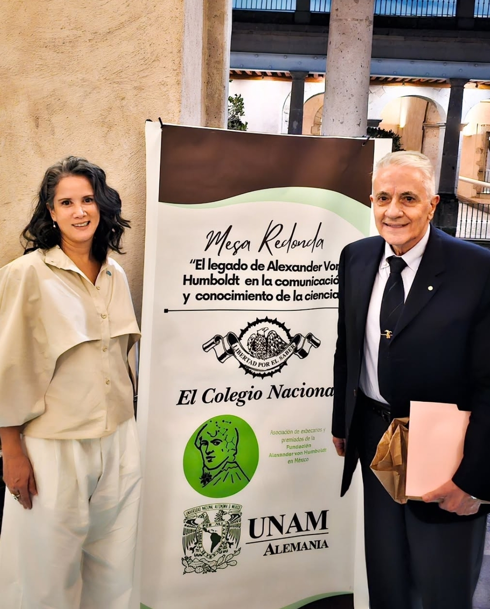
Podiumsdiskussion: Das Vermächtnis Alexander von Humboldts
Im El Colegio Nacional reflektierte der Verband ehemaliger Humboldt-Stipendiatinnen und -Stipendiaten sowie -Preisträgerinnen und -Preisträger in Mexiko über den Einfluss Humboldts auf die Wissensvermittlung, gemeinsam mit Fachleuten aus Vulkanologie, Chemie, Biodiversität, Bildung und Klimawandel. UNAM-Deutschland war ebenfalls vertreten; im Zuge eines Vorstandswechsels wurden Dr. Angélica Zepeda (Vorsitzende) und Eusebio Juaristi (stellvertretender Vorsitzender) gewählt.
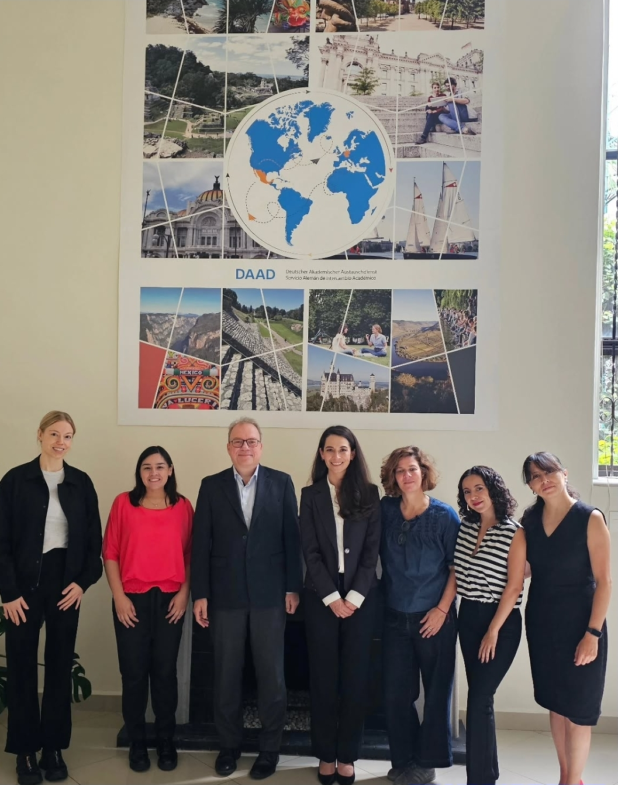
UNAM-Deutschland und der DAAD Mexiko vertiefen die akademische Zusammenarbeit
Bei einem Treffen mit Christoph Hansert, Mariana Luna und Katrin Blank vom Deutschen Akademischen Austauschdienst (DAAD) Mexiko wurden neue Wege der Zusammenarbeit zwischen UNAM und Deutschland eröffnet.
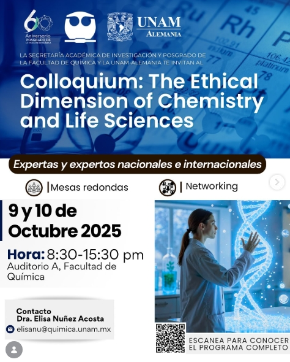
Colloquium: The Ethical Dimension of Chemistry and Life Sciences
Die Secretaría Académica de Investigación und Posgrado de la Facultad de Química lud gemeinsam mit UNAM-Deutschland zu diesem Kolloquium ein, das Podiumsdiskussionen und Networking zwischen nationalen und internationalen Fachleuten bot. Kontakt: Dr. Elisa Núñez Acosta.
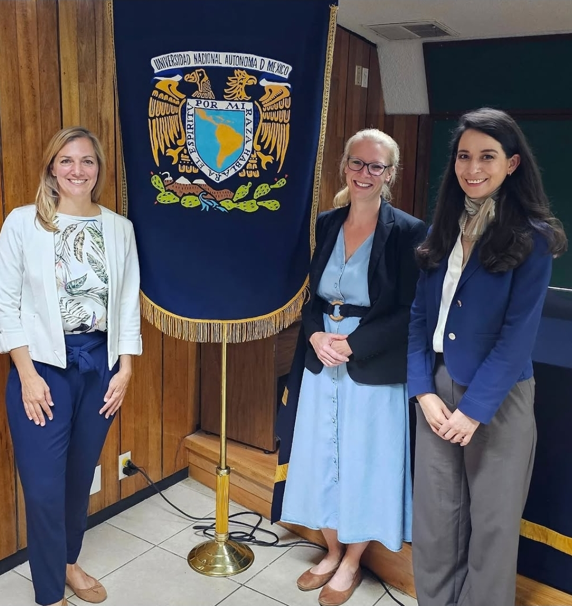
Workshop: Positive Psychologie für interkulturelles Verständnis – FCA
Die Facultad de Contaduría y Administración empfing Dozentinnen der Hochschule Bielefeld, die den Workshop leiteten. Dr. Yolanda Chirino stellte das Stipendienangebot für Deutschland vor, und im Anschluss fand ein Treffen zur Stärkung der akademischen Mobilität statt.
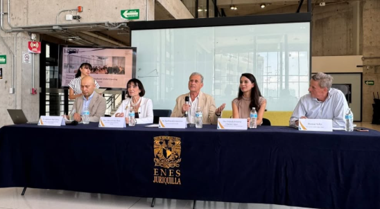
Workshop an der ENES Juriquilla: Positive Psychologie für interkulturelles Verständnis
Eine neue interkulturelle Brücke: Die ENES Juriquilla empfing Dr. Yolanda Irasema Chirino López zu einem Austausch über Studienaufenthalte in Deutschland. Den Workshop leiteten Dr. Eika Auschner und Dr. Barbara Steinmann (beide Hochschule Bielefeld); organisiert wurde die Veranstaltung von Dr. Heriberto Ruiz Tafoya.
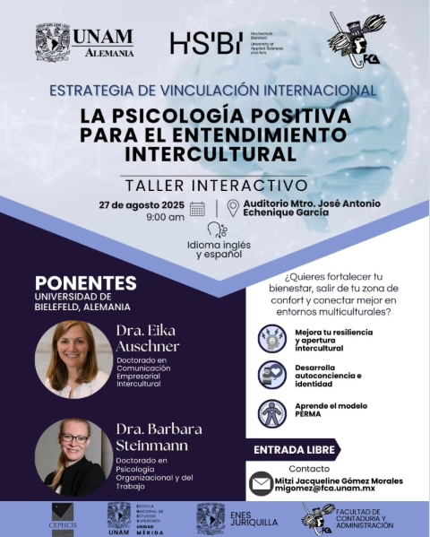
Interaktiver Workshop: Positive Psychologie für interkulturelles Verständnis
Im Rahmen der internationalen Vernetzungsstrategie zwischen UNAM-Deutschland und der HSBI leiteten Dr. Eika Auschner und Dr. Barbara Steinmann von der Hochschule Bielefeld einen Workshop zu Resilienz, Selbstwahrnehmung und dem PERMA-Modell in multikulturellen Kontexten.
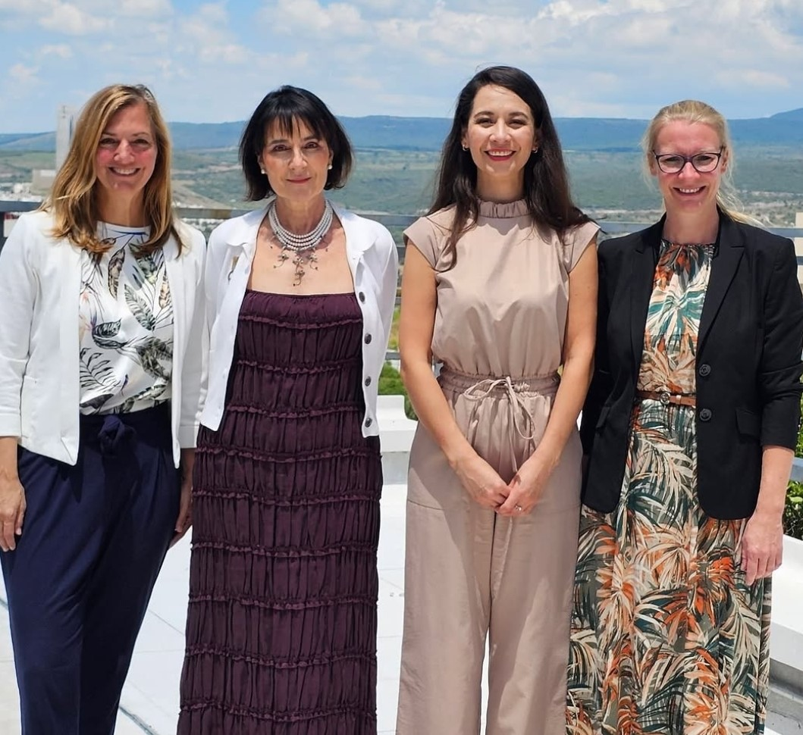
Workshop Positive Psychologie an der ENES Juriquilla
Die ENES Juriquilla war Gastgeberin des Workshops „Positive Psychologie für interkulturelles Verständnis“, geleitet von Dozentinnen der Hochschule Bielefeld. Dr. Yolanda Chirino stellte das Stipendienangebot für Deutschland vor; im Anschluss fand ein Treffen zwischen Vertreterinnen und Vertretern der ENES, von UNAM-Deutschland und der CAMEXA statt.